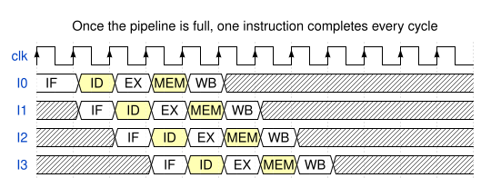
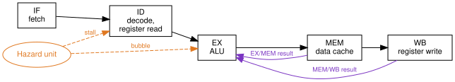
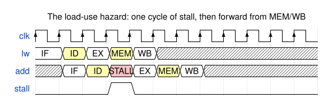
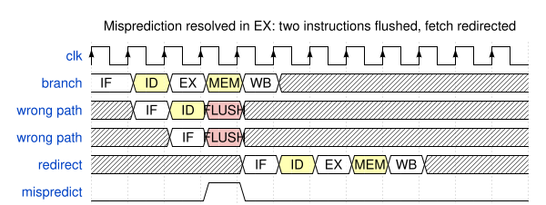
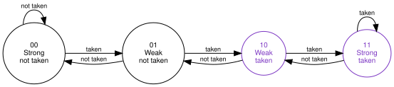
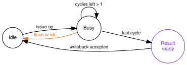

{kind=link}
Series: Intermediate SoC Design | Article 3 of 10
The stage that made it slower
The timing report said the execute stage was the critical path. You split it in two, added a pipeline register, and closed timing at 1.3 GHz instead of 1.2. An extra eight per cent of clock, for one register stage and a week of work.
Three of the four benchmarks gained around eight per cent, exactly as the frequency did. The fourth, a pointer-heavy workload full of branches that go whichever way the data feels like, lost four per cent. Same RTL, same compiler, same test, faster clock, less work done.
This article is about pipeline hazards: the conflicts that appear the moment instructions overlap, the hardware that resolves them, and the reason stage count is such a fraught number. It targets engineers designing or verifying a processor pipeline, and anyone reading a microarchitecture manual and wondering why nobody simply builds a forty-stage machine.
What overlapping actually buys
Classic reduced instruction set computer (RISC) pipelines are usually explained with five stages, and the explanation is worth keeping because every later complication attaches to one of them.
| Stage | Name | Work |
|---|---|---|
| IF | Instruction fetch | Read instruction memory or the instruction cache |
| ID | Decode and register read | Decode the opcode, read the register file |
| EX | Execute | Arithmetic logic unit operation or address calculation |
| MEM | Memory | Data memory or data cache access |
| WB | Write back | Write the result to the register file |
A single instruction still takes five cycles from fetch to writeback. Nothing about pipelining makes one instruction faster. What it changes is how many instructions can be in progress at the same time.

Latency is five cycles. Throughput approaches one instruction per cycle. Every stage boundary you add shortens the critical path between registers, which is why the timing report kept suggesting more of them.
The diagram above is also a lie of omission. It shows four instructions that have nothing to do with each other. Real code is not like that.
Three ways instructions collide
An instruction in a pipeline is no longer isolated. It may need a value, a decision, or a piece of hardware that an older instruction has not finished with. Those conflicts are pipeline hazards, and they come in three kinds.
- Data hazards. An instruction needs a value that is not available yet.
- Control hazards. The next program counter depends on a branch or an exception that has not resolved yet.
- Structural hazards. Two stages want the same piece of hardware in the same cycle.
Everything else in this article is the disciplined handling of those three, without producing wrong results and without stalling more than necessary.
Data hazards and the bypass network
Take the shortest dependent pair in any instruction set:
add x3, x1, x2 // x3 = x1 + x2
sub x5, x3, x4 // needs x3 immediately
The add writes x3 in WB, in cycle 4. The sub reads its operands in ID, in
cycle 2, and needs them in EX in cycle 3. Left alone, the sub reads the old
value of x3 and quietly computes the wrong answer.
Waiting is one answer, and it costs three cycles on a pattern that appears in almost every basic block. The better answer is that the value already exists. It sits in the EX/MEM pipeline register at the end of cycle 3, fully computed. It is simply not in the register file yet.
Forwarding, also called bypassing, routes that result straight back to the input of the execute stage instead of waiting for writeback.

Each execute-stage operand becomes a multiplexer choosing between three sources: the register file value, the result of the immediately preceding instruction sitting in EX/MEM, and the result of the instruction before that sitting in MEM/WB. Priority matters. If both bypass sources match, the younger one wins, because it holds the more recent value.
With those two paths in place, back-to-back arithmetic dependencies cost nothing at all. This is the single highest-value structure in an in-order pipeline, and it is why a naive stall-on-dependency design performs so badly by comparison.
The one it cannot fix
Forwarding works because the value exists somewhere earlier than the register file. Loads break that assumption.
lw x3, 0(x1)
add x5, x3, x4
The load data arrives from the data cache at the end of MEM, in cycle 3. The
dependent add wants it in EX, also in cycle 3, and no wire runs backwards in
time. One cycle of stall is unavoidable.

The pipeline holds IF and ID in place for a cycle and injects a bubble into EX.
After the stall, the ordinary MEM/WB bypass path delivers the value and the
add proceeds.
Detecting it is a comparison between the instruction in ID and the load already in EX:
assign load_use_hazard =
ex_is_load &&
(ex_rd != 5'd0) &&
((ex_rd == id_rs1) || (ex_rd == id_rs2));
assign stall_if = load_use_hazard;
assign stall_id = load_use_hazard;
assign insert_bubble_ex = load_use_hazard;
The ex_rd != 5'd0 term earns its place. On RISC-V, register x0 reads as
zero and discards writes, so a load into x0 produces no value anybody can
depend on. Without the check, every discarded load stalls a following
instruction that reads x0, which is a common idiom. Whatever your instruction
set, find its equivalent and prove it does not create phantom hazards.
Compilers know about this stall and schedule an independent instruction into the gap when they can find one. When they cannot, the cost is real, and it scales with how many cycles late the load data is.
Control hazards and the cost of guessing
A branch changes the program counter, and the pipeline has already fetched past it. In a five-stage design the condition resolves in EX, by which point two younger instructions are in flight.
Waiting for the branch is the honest option and the slow one. It costs two cycles on roughly one instruction in five. Resolving the branch earlier in ID helps, at the price of a comparator on the critical path and a new forwarding problem for the values being compared.
Every high-performance pipeline takes the third option: guess, and clean up when the guess is wrong.

Two fetched instructions become bubbles. Note what determines that number: it is the distance between the fetch stage and the stage where the branch resolves. Not the total pipeline depth, and not the branch itself.
Predictors, and why two bits
A static predictor guesses from the instruction alone. Backward branches are assumed taken and forward branches not taken, which is a decent guess because backward branches are usually loops. It costs almost nothing and is right about two thirds of the time.
Dynamic prediction learns from what the branch did before. The smallest useful structure is a two-bit saturating counter per branch.

The second bit is the whole point. A loop that runs a hundred times and exits once would, with a one-bit predictor, mispredict twice per execution of the loop: once on the exit, and once again on the next entry, because the single bit was flipped by that exit. The two-bit counter absorbs the anomaly, drops from strong to weak, and keeps predicting taken.
Real branch prediction units go much further, with global history, tagged geometric-length tables, branch target buffers, and return address stacks. They all rest on the same trade: storage and complexity in exchange for a lower misprediction rate, because misprediction is the thing that costs cycles.
When the guess is wrong, the younger instructions have to disappear:
assign flush_if_id = branch_resolved && branch_mispredict;
assign flush_id_ex = branch_resolved && branch_mispredict;
assign next_pc = branch_mispredict ? branch_target : pc_plus_4;
A flush turns wrong-path instructions into bubbles. It must also suppress every side effect they could have had: register writes, memory writes, control and status register updates, and any outstanding request already issued to a multi-cycle unit. A flush that clears the valid bit but leaves a store enable asserted is a memory corruption bug, and it will only appear when the branch and the store line up in one specific way.
What the extra stage actually bought
Now the opening result. Return to that pointer-heavy benchmark, and put numbers against the two designs.
Cycles per instruction (CPI) starts at 1.0 for a full pipeline and gets worse from there. On this workload, a quarter of instructions are branches, a fifth of those branches are mispredicted because the data decides them, and loads feed a dependent instruction immediately about half the time.
| Contribution | Five-stage | Six-stage |
|---|---|---|
| Base | 1.00 | 1.00 |
| Branch mispredict penalty | 3 cycles, 0.15 | 5 cycles, 0.25 |
| Load-use stall | 1 cycle, 0.075 | 2 cycles, 0.15 |
| Cache misses and other | 0.10 | 0.10 |
| CPI | 1.325 | 1.50 |
| Clock | 1.2 GHz | 1.3 GHz |
| Instructions per second | 906 M | 867 M |
The extra register stage did exactly what it was asked to do. It shortened the critical path and the clock went up. It also moved branch resolution one stage further from fetch and put the load data one cycle further from the consumer, so every mistake got more expensive at the same time.
Here is the reframe. A pipeline stage costs nothing while the pipeline is right, and costs the entire pipeline when it is wrong. You are not buying throughput with depth. You are buying frequency, and paying for it with the penalty on every event that discards work.
{kind=link}
That explains the split in the results. The three benchmarks that gained were predictable ones, where the pipeline is right almost all the time and depth is nearly free. The one that lost was the one that is wrong constantly, where depth is charged on every mistake.
It also explains the shape of the industry. The deepest commercial pipelines appeared alongside the most elaborate branch predictors ever built, and that is not a coincidence. Depth is only affordable if you are right.
Structural hazards
The third class is the most mundane and the easiest to design out, if you find it before tape-out. A structural hazard is hardware oversubscription: two stages wanting one resource in one cycle.
{kind=link}
The classic examples:
- One memory port serving both instruction fetch and data access, so every load or store stalls a fetch. This is the reason for separate instruction and data caches.
- A single register-file write port with two instructions completing at once, which happens as soon as any operation has a different latency from the rest.
- A shared multiplier still busy with a multi-cycle operation.
- Cache miss handling resources, such as miss status holding registers, already fully allocated.
The remedies are duplication, banking, arbitration, or stalling one user. Choosing to stall is legitimate, and choosing it by accident is not. Every resource with more than one potential claimant needs a documented arbitration policy, including what happens when the loser is starved.
Units that take their time
Multipliers, dividers, and floating-point units do not fit the one-cycle execute model. They need their own small state machine, and the pipeline needs to know when the result is coming.

The amber edge is the one that gets forgotten. If a branch flush or an exception can kill an operation while the unit is mid-calculation, the unit needs a valid bit or a transaction tag so a stale result cannot commit three cycles later against a program counter that no longer exists. Divider results arriving after the flush that should have killed them is a bug class of its own, and it is invisible until a divide happens to sit just before an unpredictable branch.
Precise exceptions
Software expects an exception to look instantaneous: every older instruction complete, no younger instruction having changed any architectural state, and a program counter that says exactly where to resume. The hardware, meanwhile, has five instructions in flight and has been speculating for the last three cycles.
{kind=link}
Even an in-order pipeline has to work at this:
- A faulting load must not be followed by a younger register write.
- Wrong-path instructions must not perform stores.
- Control and status register writes must be ordered with respect to exceptions.
- The flush must clear every side-effect enable, not just the valid bits.
- If two instructions fault in the same cycle, the older one wins, always.
Out-of-order processors solve this with a reorder buffer and an explicit commit stage. In-order pipelines solve it with valid bits and a clearly designated point past which effects become visible. The mechanism differs, the rule does not: pick one place where speculation ends, and let nothing escape it early.
Design checklist
Settle these before writing the datapath, because retrofitting any of them is painful:
- Put a valid bit beside every pipeline register and treat it as the only thing that makes a stage's contents real.
- Name the exact stage that commits register writes, memory writes, and control register side effects. Write it in the specification.
- Add forwarding paths only where the value genuinely exists in time, and check each one against the timing report before committing to it.
- Prove the zero register, and any other write-discarding destination, cannot create a false hazard.
- Treat branch flush, exception flush, and debug halt as three cases of one mechanism, and verify all three.
- Give every multi-cycle unit a kill path, and test that a result cannot commit after the instruction that produced it was flushed.
- Test the interactions, not the cases: a stall and a flush arriving in the same cycle, a load-use pair straddling a mispredicted branch, an exception on the instruction directly behind a stalled load.
Count the penalties before adding the stage
The design question is never "how deep should the pipeline be". It is "what does this stage add to the branch resolution distance and the load-use distance, and what is that worth on the code we actually run".
Both numbers are countable on a whiteboard before any RTL exists. Multiply each by how often the event happens in your workload, add them to the base CPI, and divide the new clock frequency by the result. If that number is not comfortably larger than the old one, the stage is not worth the week.
Point 7 of the checklist is where the real bugs live, and it is the point most often skipped. Stall-and-flush in the same cycle is one line in a verification plan and, judging by errata sheets, several months of somebody's life.
Previous: Article I-02: Cache coherency protocols Next: Article I-04: RTL synthesis and timing closure